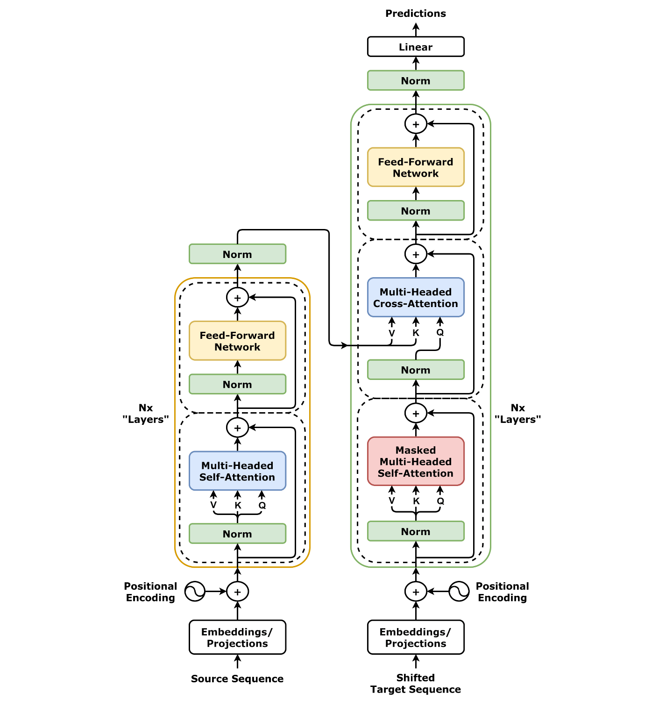

LLM Workshop - Introduction
NAISS
2025-11-19
Overview
- History of AI
- Compute and AI
- Ethics and concerns
- Introducing the workshop hardware
History of AI
- How has AI developed over time?
AI as a term is coined
We propose that a 2-month, 10-man study of artificial intelligence be carried out during the summer of 1956 at Dartmouth College in Hanover, New Hampshire. […] An attempt will be made to find how to make machines use language, form abstractions and concepts, solve kinds of problems now reserved for humans, and improve themselves. We think that a significant advance can be made in one or more of these problems if a carefully selected group of scientists work on it together for a summer.
Early NLP – 1956-1966
- Rule based, lots of manual effort
- Lots of LISP
- Used for:
- Information retrieval
- Basic chat-bots e.g. Eliza
- Limited translation systems
AI Winter I – 1974-1980
- NLP Winter started even earlier

Statistical NLP – 1980s

- Using statistics of the corpus
- Bag-of-words, N-grams
AI Winter II – 1990s, early 2000s
- The word “AI” is not a buzzword
- Research continues under other names
Deep Learning – 2012-

- 2012: AlexNet has less than 25% error on ImageNet challenge
- 2017: Transformer architecture (Attention Is All You Need, retrospectic)
- 2019: GPT-2 released. Surprisingly good.
- 2020: GPT-3 released. Surprisingly still improving.
- 2022: ChatGPT (GPT-3.5) released. General public starts to take notice.
Deep Learning – Transformer architecture
thus more parallelizable.

Deep Learning – Attention mechanism
- Scaled Dot-Product Attention \[ \mathrm{Attention}(V, K, Q) = \mathrm{softmax}\left(\frac{QK^\top}{\sqrt{d_K}}\right)V \]
- Cross-attention: \(Q = X_\mathrm{dec} W_Q\), \(K = X_\mathrm{enc} W_K\) and \(V = X_\mathrm{enc} W_V\)
- Self-attention: Same \(X\) used for all matrices
- In decoder, self-attention masks future tokens
- Autoregressive unimodal LLMs usually decoder only
Compute and AI
- What has changed?
- The bitter lesson by Richard Sutton, 2019
The biggest lesson that can be read from 70 years of AI research is that general methods that leverage computation are ultimately the most effective, and by a large margin.
Compute use over time
- Compute, but also data, architecture and algorithms
Compute and performance
What was new with ChatGPT?
- Base models are pure language models
- Chat models are:
- Instruct tuned (supervised)
- Reinforcement Learning with Human Feedback
RLHF
- Enables RL when no clear scoring function available
- Relatively little human input needed
Further scaling

Ethics and issues
- Societal concerns
- Misuse concerns
- Misalignment concerns
Societal concerns
- Perpetuated bias
- Confident falsehood and sycophancy
- Copyright & IP issues
- Distribution of wealth and the job market
- E.g. GDPval benchmark
- Climate footprint
- Word for word comparisson, AI is cheaper
- But, AI can generate a lot more text (rel. Jevons paradox
Misuse concerns
- Mass spear phishing, disinformation campaigns, …
- Cyberattacks
- Finding and exploiting vulnerabilities
- Enabling bad actors
Misalignment
- RLHF is only a step towards aligning AI
- Goodhart’s law
- Misaligned leadership?
- What future are they aiming for?
- Superintelligence
Introduction to the hardware for this workshop
- Main reference: Alvis introduction material
- Compute clusters
- GPUs as compute accelerator
- Multi-GPU
- Containers
- Batch queue system
Compute clusters
The compute node

- Speed-up by parallelization
- Feeding data to GPU memory (VRAM) often bottleneck
Software
- Default software environment intentionally sparse
- Use modules or containers to run software
- (Follow our recommendations when installing Python packages)
- We will use containers in this course
Software – containers
- Apptainer containers
- A single file for your software and all dependencies
- (Building containers)
- Running software in a container
SLURM
- Batch queueing system
- Allocates resources in a fair and effective manner
- Resources are finite so expect queue times occasionally
SLURM workflow – Preparing job

SLURM workflow – Submitting job to queue

SLURM workflow – Job starts
Partial command overview
- View queued and running jobs
squeue [--me] - View previous jobs
sacct - Submit jobs
sbatch <JOBSCRIPT> - Cancel queued or running jobs
scancel <JOBID> - More complete overview at SLURM documentation and Alvis intro
Summary of Introduction
- Compute a key component to the success of LLMs
- Use and development of AI is not without its issues
- The hardware you can access
- Containers for accessing software
- SLURM batch queue system for running things on the cluster
Exercises
- Make sure you have finished prerequisites
- Navigate to the workshop project storage directory (see path with
C3SE_quota) - Create your own directory e.g.
mkdir ${USER} - Copy
/mimer/NOBACKUP/groups/llm-workshop/exercises/day1/introduction/and its content to your directory - Do the below exercises
Submitting a batch job
- Take a look at
jobscript.shwith your favourite editor - Submit
jobscript.shwith sbatch - Monitor your jobs (with
job_stats.py <JOBID>and/or manually over SSH)- Use
squeueandsacctto see job-IDs, nodelist etc. - Job stats links are at the top of
slurm-<JOBID>.out
- Use
Running interactively
- Go to https://alvis.c3se.chalmers.se
- Launch a short interactive session using few resources
- Try it out and make sure to close the session when you are done
- (Optional) adapt a runtime from
/apps/portal/to your own runtime in~/portal